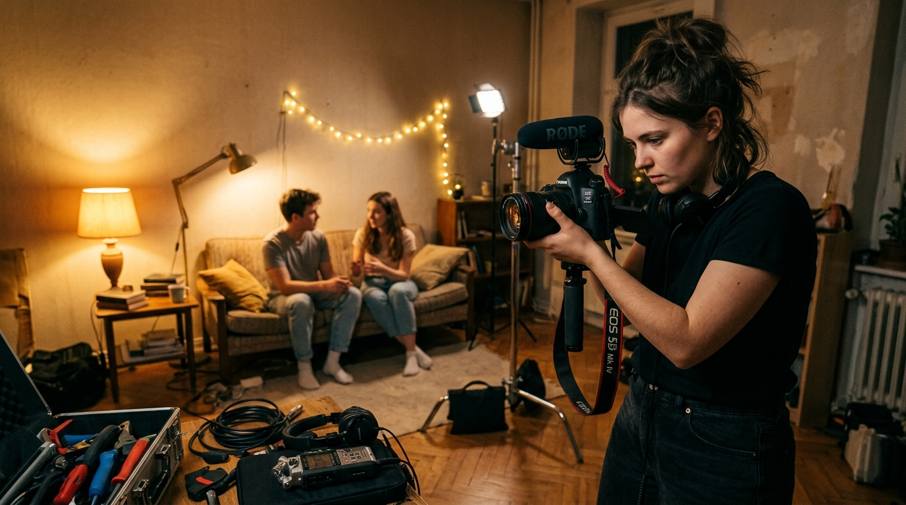

You don't need ₹10 lakhs, a cinema camera, or a film school degree to make a compelling short film. Some of the most celebrated short films in history were shot on borrowed cameras with a crew of three. What separates a finished film from a half-baked idea? A clear process — and the willingness to start with what you have.
This guide walks you through every stage of making a short film on a tight budget — from the first draft of your script to uploading your final cut online. Whether you're a complete beginner or someone who's been putting it off for months, this is your roadmap.
Short films are the most powerful learning tool in filmmaking. Every great director — Christopher Nolan, Anurag Kashyap, Zoya Akhtar — built their craft on short projects before they touched a feature film. Short films teach you to make decisions fast, work with constraints, and communicate a story visually rather than just through dialogue.
The sweet spot for a beginner short film is 5–12 minutes. Long enough to develop a character and a conflict. Short enough to actually finish. Budget? You're aiming for under ₹10,000 (or even zero) for your first project. Let's make it happen.
The single biggest budget mistake beginners make is writing a script first and then trying to figure out how to afford it. Flip that. Write a script that is designed around what you can actually access for free.
The golden rule of budget filmmaking: one location, two or three characters, daytime exteriors. Every additional location, night shoot, or special effect multiplies your cost and complexity.
Look around you. Your apartment, a local park, a friend's café, your college corridor — these are your sets. Write characters who could believably be in those spaces. A short film about two old friends meeting at a tea stall is far more achievable than a heist set across three cities.
Pro Tip: Before you write a single scene, ask yourself: "Can I shoot this scene in a single afternoon, with people I already know, in a place I can access for free?" If the answer is yes to all three, you have a budget-viable story.
The biggest time and money savings in filmmaking happen before you ever press record. Rushed pre-production means re-shoots, wasted hours on location, and footage you can't edit together. Budget filmmakers cannot afford re-shoots. So plan obsessively.
Go scene by scene and list every shot you need: wide establishing shot, medium two-shot, close-up on the object, reaction shot. Draw rough thumbnail sketches if it helps — this is called a storyboard, and even stick figures count.
A good shot list means you never arrive on location wondering what to capture. You already know. You execute, pack up, and leave.
Walk your locations in advance — ideally at the same time of day you plan to shoot. Check where the sun hits. Look for ambient sound issues (traffic, construction). Identify electrical outlets if you need them. Take reference photos on your phone.
For public spaces, you often don't need a permit for small crew shoots (2–4 people). Check local rules and be discreet. Many parks, streets, and markets are perfectly shootable without paperwork.
Acting schools, college drama clubs, and Instagram theatre communities are full of people who want screen experience. Post a simple brief on social media or message people directly. Offer a film credit, a copy of the final film, and genuine creative collaboration. Most early-career actors will say yes.
For a 5-minute short, you need actors who can deliver two or three emotionally coherent scenes. Don't over-cast. One strong lead and one supporting character is enough.
Here's the liberating truth: the camera matters far less than light, sound, and story. A beautifully lit, well-acted scene shot on a mid-range smartphone will look better than a poorly lit scene shot on a cinema camera.
| Item | Budget Option | Approximate Cost |
|---|---|---|
| Camera | Smartphone (iPhone 12+, Samsung S21+) or borrowed DSLR | ₹0 (existing) / ₹500–1,500 rental |
| Stabilization | Cheap gimbal or DIY shoulder rig; even a tripod changes everything | ₹800–2,000 |
| Microphone | Rode VideoMicro or Boya BY-M1 lapel mic | ₹1,500–3,000 |
| Lighting | Two LED panel lights or shoot in natural light (window/golden hour) | ₹0–2,000 |
| Editing | DaVinci Resolve (free), CapCut (free), iMovie (free) | ₹0 |
| Total | ₹2,300–8,500 — entirely doable | |
Sound is 50% of your film. Audiences forgive slightly shaky footage. They will not forgive audio that's hard to understand. Prioritize a decent microphone above almost every other gear investment. Record room tone (30 seconds of ambient silence) at every location — you'll need it in the edit.
For every scene, shoot approximately five takes of each key shot — a master wide shot, a medium, and a close-up. This gives you options in the edit without burying yourself in footage. Budget filmmakers often make the mistake of doing 20 takes on the same shot; that's time you don't have.
Aim for a shooting ratio of about 5:1 — five minutes of raw footage for every one minute of finished film. A 10-minute short film needs about 50 minutes of usable footage.
Natural light is your best friend and your biggest variable. Overcast days provide beautiful, soft, diffused light — perfect for dialogue scenes. Direct harsh midday sun creates ugly shadows on faces. Schedule your close-ups and emotional scenes for overcast days or early morning light.
If you're shooting indoors, place your subject facing a large window. That's a key light. Use a white foam board or bedsheet as a reflector on the other side to fill in shadows. You now have a basic two-point lighting setup for zero rupees.
Many first-time filmmakers spend months in the editing room because they didn't plan their cuts before shooting. If you followed your shot list, editing becomes a matter of assembly, not archaeology.
Pass 1 — Assembly cut: Put every scene together in order, using the best take of each shot. Don't obsess over transitions yet. Get the story moving.
Pass 2 — Rough cut: Tighten. Cut any moment where nothing is happening. If a scene doesn't advance character or plot, trim it. Aim to cut 20–30% of your assembly cut.
Pass 3 — Fine cut: Sound design, music, colour grade. Add ambient audio layers. Apply a subtle LUT in DaVinci Resolve for a cinematic look. Export and review on a different screen (TV, phone).
A finished short film that nobody sees is a missed opportunity. Distribution is part of the process, not an afterthought.
Your short film is a portfolio piece, not a product. Its job is to demonstrate your vision, technical ability, and storytelling instinct to future collaborators, clients, and training programs. Every filmmaker you admire has a short film (or ten) that nobody watched — and they made it anyway.
If you're paralysed by where to start, here's the simplest possible blueprint:
Five weeks. One film. Your portfolio has officially begun.
Join FrameCraft's online filmmaking training — structured modules, real project feedback, and a community of filmmakers who've been exactly where you are now.
Explore the Course →